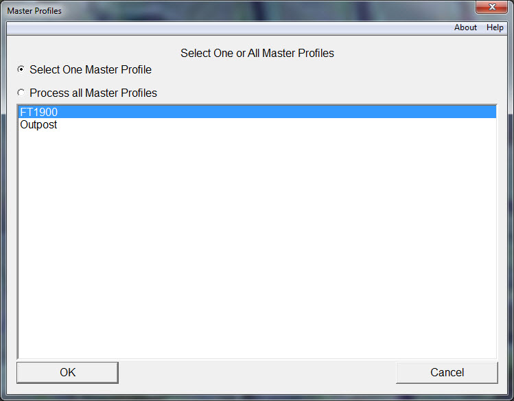

Two or More Master Profiles
|  |
| Fig. 4 -- When there are two or more Master Profiles the user must select one. |
When one computer will be used with two or more modem/radio configurations things become more complex for PreOutpost. Now PreOutpost must allow the user to create two or more profiles, add identity information to one of them (or all of them) and in some cases to delete a master profile.
When two or more master profiles are present the first thing that must happen is that the user must select which master profile to use. Alternatively all profiles can be processed by PreOutpost. The default is to use one Master Profile but the user can choose to process all Master Profiles by selecting the "Process all Master Profiles" radio button (see Figure 4).
Clicking OK on the dialog box will present the FCC and Tactical Identity dialog box and the results will be similar to the single Master Profile case.